Як влаштована CRM, що робити щодня і де шукати відповідь, коли щось пішло не так. Від першого входу до правил автовимкнення й шаблонів запуску.
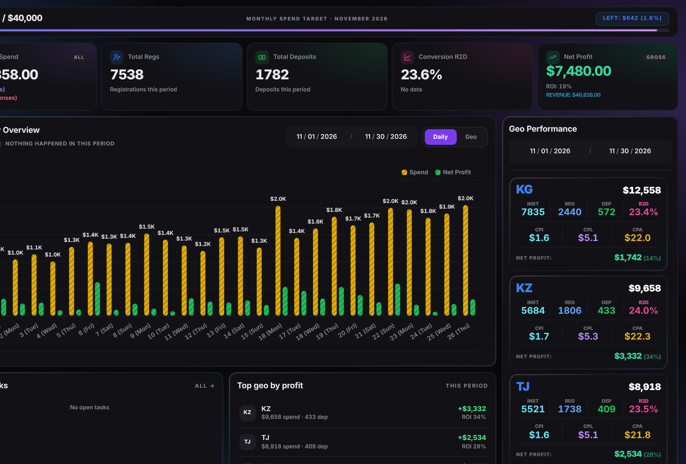
Логін, команда, місяць і де що лежить
CRM — це сайт. Відкриваєш його в браузері, входиш своєю поштою й паролем, які тобі видав тімлід. Встановлювати нічого не треба.
| Зона | Що там |
|---|---|
| Меню зліва | Overview — сторінки для щоденної роботи: Dashboard, Heatmap, Creatives, FB LIVE, Domains, Expenses, Posts, Report Builder. Data hub — сирі дані й довідники: Campaigns, Records, Assistant, Sheets, Sources. Унизу — Collapse (згорнути меню) і Settings. |
| Нижня панель | Інструменти, які потрібні з будь-якої сторінки: місяць, звіти, задачі, файли, унікалізатор, логи. Повний список — у розділі 10. |
| Кнопка «+» | Add data — внесення статистики з файлів Facebook і Keitaro (розділ 3). |
BUILD 27.11 10:04) — його корисно назвати, коли пишеш про помилку.Що відкривати вранці, вдень і ввечері
Основна робота баєра в CRM крутиться навколо двох сторінок: FB LIVE (що відбувається зараз) і Dashboard (що вийшло в грошах). Решта — інструменти під конкретну задачу.
Add data: файл Facebook + файл Keitaro
Статистику в CRM не треба вбивати руками. Ти вивантажуєш два звіти — з Facebook Ads Manager і з Keitaro — і перетягуєш їх у вікно Add data. CRM сама зводить їх по даті, кабінету, гео й воронці.
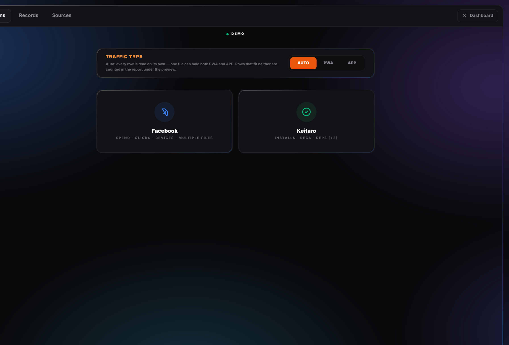
CRM дістає гео, офер і воронку з назви кампанії. Для PWA формат такий: Офер_ГЕО_номер-хеш_дата, наприклад Mbank_KG_10708-y3wz_07/11. Для APP назва розбирається за позиціями, які налаштовані в Settings. Кампанія з назвою не за шаблоном потрапить у «невпізнані» — CRM про це скаже під переглядом, і її цифри не ляжуть на правильне гео.
Data hub → Records — уся завантажена статистика рядками: дата, кабінет, гео, офер, воронка, агент, спенд, інстали, реги, депи. Тут можна відфільтрувати, виправити рядок і вивантажити CSV.
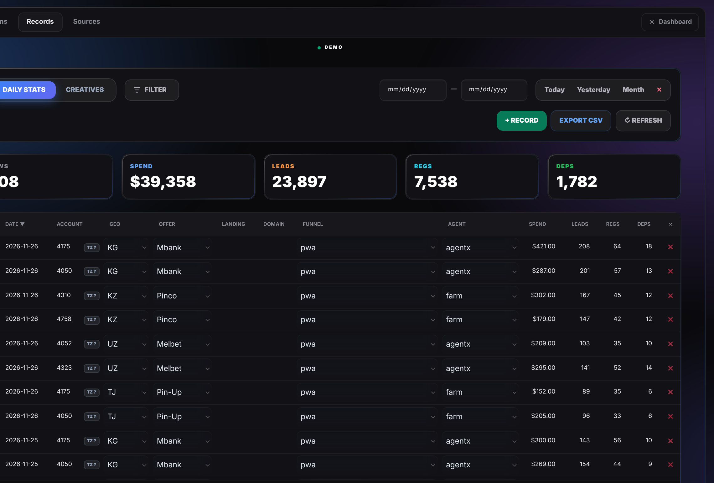
Гроші за місяць однією сторінкою
| Блок | Що показує |
|---|---|
| Monthly spend target | Скільки витрачено з плану на місяць і скільки лишилось. План задається в Settings → General. |
| Total Spend | Спенд за період. Під ним — комісії (fees) і витрати з Expenses, які зменшують профіт. |
| Total Regs / Deposits | Реєстрації й депозити з Keitaro за період. |
| Conversion R2D | Яка частка реєстрацій дійшла до депозиту. |
| Net Profit | Дохід (депозити × ставка офера з Settings → Payouts) мінус спенд і витрати. Під ним ROI і Revenue. |
| Cashflow Overview | Графік по днях: Daily — спенд і профіт, Geo — лінія на кожне гео. Events — позначки на датах, коли щось сталося (бан, зміна стану), щоб стрибок на графіку мав пояснення. |
| Geo Performance | Картка на кожне гео: інстали, реги, депи, R2D, CPI, CPL, CPA і профіт. Клік по гео відкриває деталі, зокрема як рухалась ціна по днях. |
| Open tasks / Top geo | Твої відкриті задачі (Mission Center) і найприбутковіші гео за період. |
Усі кабінети наживо, прямо з Facebook
Тут ти проводиш більшу частину дня. FB LIVE показує кожен рекламний кабінет: чи він живий, скільки відкрутив сьогодні, скільки лідів, реєстрацій і депозитів, і що всередині — кампанії, адсети, оголошення. Звідси ж їх вмикають і вимикають.
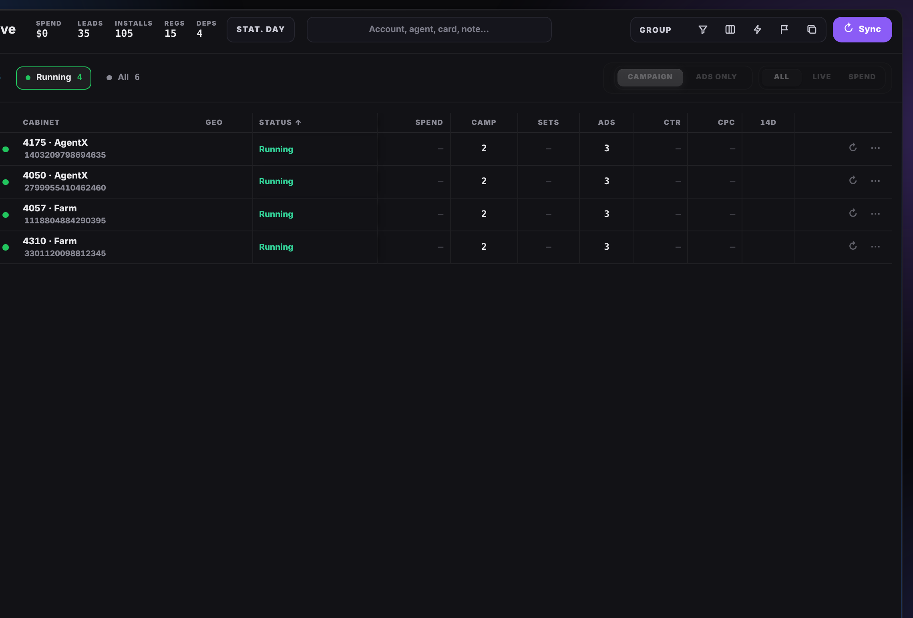
CRM бачить кабінети через токени системних користувачів Facebook (Settings → Integrations → Facebook). Кожен токен прив'язаний до BM і бачить його кабінети. Синхронізація йде сама щогодини; кнопка Sync оновлює негайно — поруч видно, скільки хвилин тому був останній синк.
| Spend · Leads · Regs · Deps | Підсумки сьогоднішнього дня по всіх кабінетах, хоч би який фільтр стояв. Клік по Spend показує суму окремо по валютах. Знак ≈ означає, що частина суми переведена з іншої валюти за курсом. |
| Stat. Day | Цифри дня таблицею по гео, кабінетах, воронках і креативах; календар — для минулих днів (розділ 6). |
| Пошук | Шукає по кабінету, агенту, картці, нотатці. |
| Group | Групування: за агентом, станом, браузером (профілем), BM або карткою. |
| Фільтр (лійка) | Мітки гео та «мав спенд сьогодні». Крапка на іконці — фільтр увімкнений, тобто показано не все. |
| Колонки | Які стовпці показувати в таблиці. |
| Блискавка | Rules — правила автовимкнення. |
| Прапорець | Pages — сторінки (фанки) та коментарі під ними. |
| Два квадрати | Templates — шаблони запуску кампаній. |
Вкладки над таблицею: Banned (заблоковані Facebook), Live (є активні оголошення), Running (крутять зараз), Archived (сховані тобою), All. Число поруч — скільки кабінетів у статусі. Кабінет в архіві з усією історією видаляється автоматично через 3 дні.
Стрілка ліворуч від кабінета розгортає дерево: кампанія → адсет → оголошення, з бюджетом, спендом, CTR, CPC і перемикачем на кожному рядку.
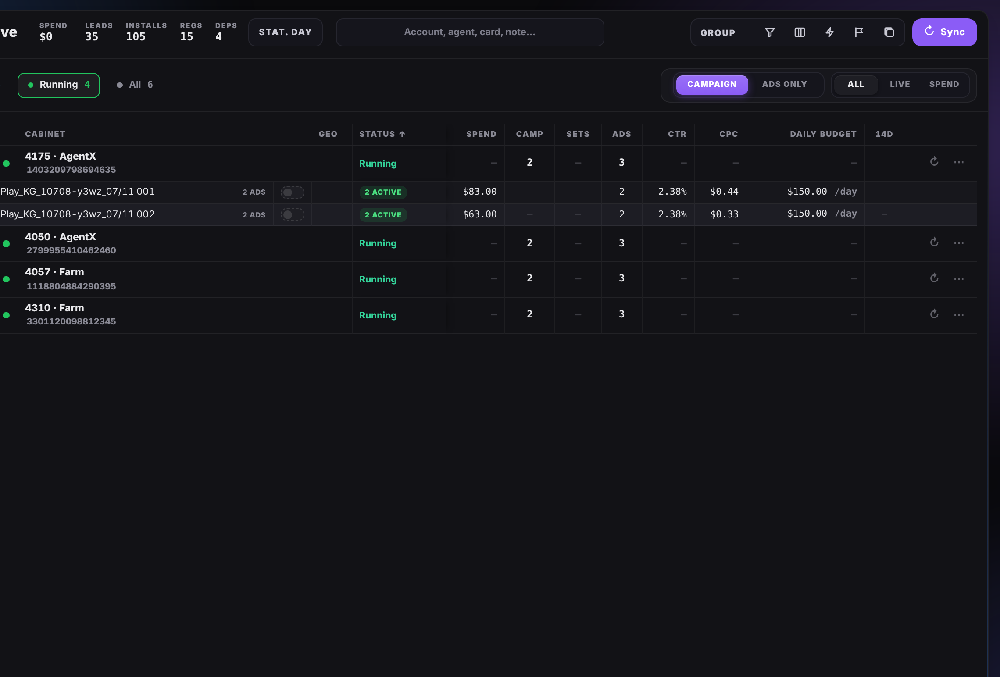
| Campaign | Ads only | Campaign — деревом. Ads only — самі оголошення, найдорожчі першими. Якщо відмічена кампанія, Ads only показує лише її оголошення. |
| All | Live | Spend | All — усе. Live — лише те, що Facebook реально показує (без реджектів, заблокованих і вимкнених). Spend — усе, що сьогодні щось коштувало. |
| Перемикач | Вмикає/вимикає кампанію, адсет чи оголошення в самому Facebook, як в Ads Manager. |
| Галочки | Відміть кілька рядків — з'явиться смуга масових дій. Галочка на кабінеті відмічає всі його розгорнуті рядки. |
| Око | На оголошенні: показує, де воно крутиться — домен, кампанію й адсет. Поки око закрите, адресу сховано. |
| Іконка креативу | Мініатюра з Google Drive; наведи — побачиш превʼю. |
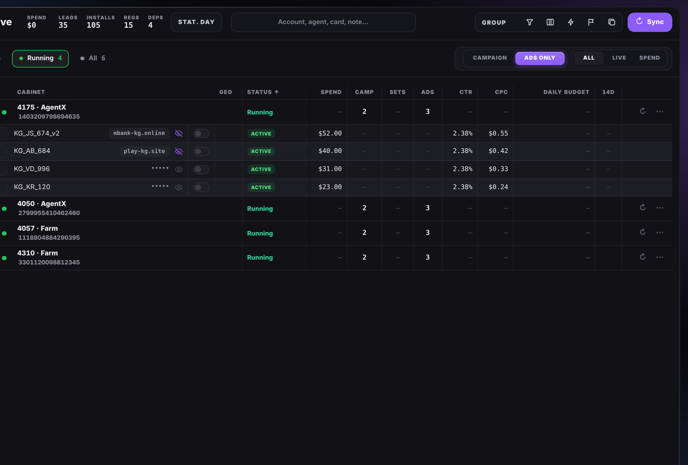
Клік по рядку кабінета відкриває панель поверх таблиці (стовпці під нею не зсуваються).
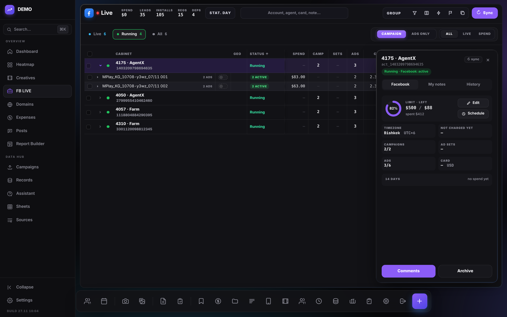
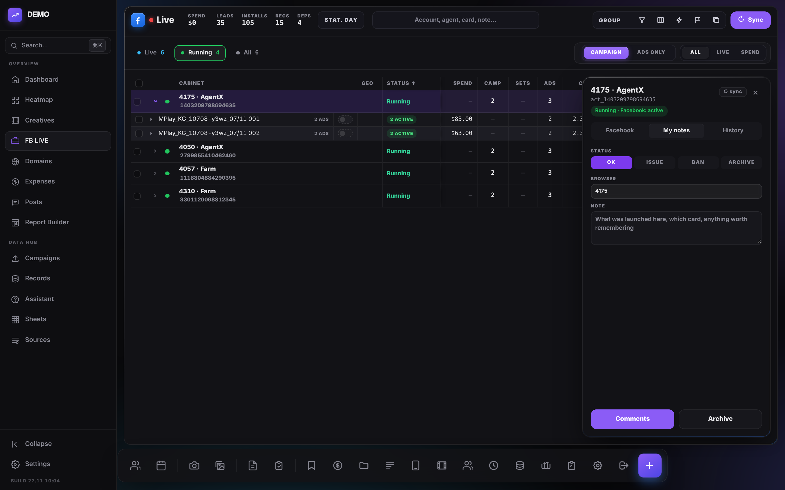
| Шапка | Номер профілю й агент, act_… (клік — копіює), статус у CRM і статус у Facebook, sync лише цього кабінета, закрити. |
| Ліміт кільцем: скільки витрачено з ліміту й скільки лишилось. Edit — змінити ліміт, Schedule — запланувати зміну. Нижче — часовий пояс, ще не списане з картки, кількість кампаній/адсетів/оголошень, картка, сторінка, графік за 14 днів. | |
| My notes | Твій статус кабінета (OK / Issue / Ban / Archive), додаткові поля й нотатка: що тут запускали, яка картка, що варто пам'ятати. |
| History | Журнал: бани, зміни стану, твої правки — з часом. |
| Comments / Archive | Comments — коментарі під оголошеннями цього кабінета: прочитати, сховати, видалити. Archive — прибрати кабінет зі списку. |
Інструменти FB LIVE
Правило — це «якщо оголошення витратило понад X і метрика гірша за Y — вимкнути». Перевіряє їх сервер за розкладом, тож вкладку можна закрити. Метрики: Cost per link click, Cost per lead, CPM, Spend today, Link CTR, Leads, Cost per registration, Cost per purchase та інші.
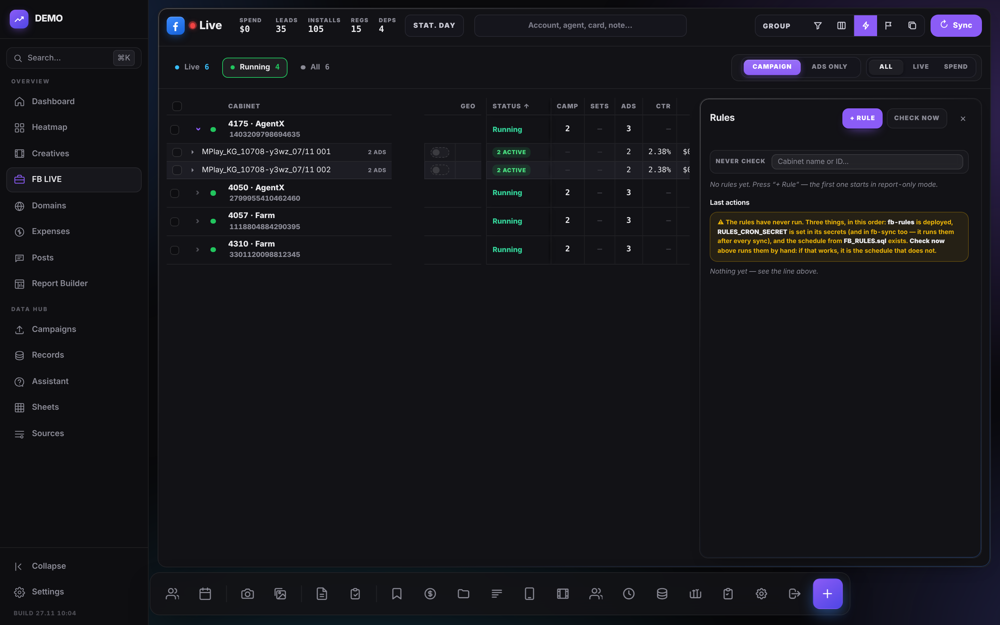
Список сторінок (фанок), до яких дотягуються твої токени, і коментарі під їхніми постами. Сторінки з новими коментарями відкриваються першими. Ті самі коментарі приходять у Telegram з підписом, з якої сторінки.
Одна таблиця за день з групуванням: гео / кабінет / воронка / креатив. Сьогодні — живі дані з останнього Sync; минулі дні — календарем справа. Зручно вранці подивитися вчорашній день, не чекаючи Add data.
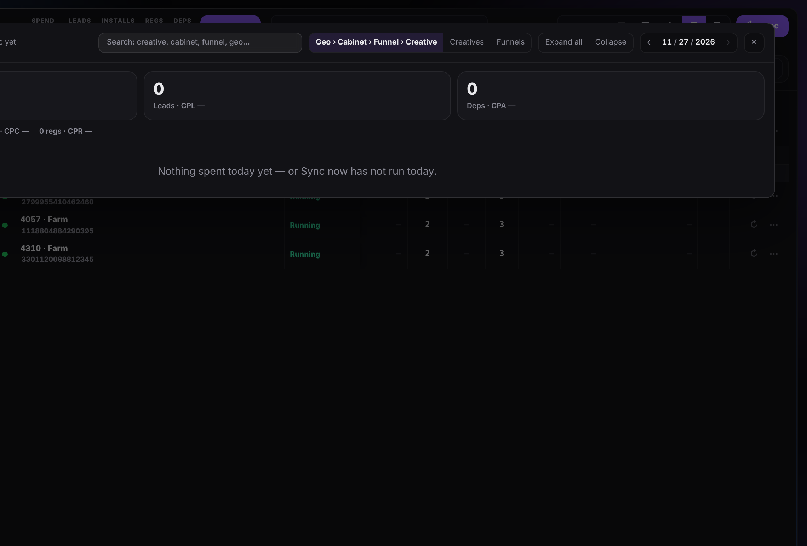
Які креативи працюють і як зробити з них нові
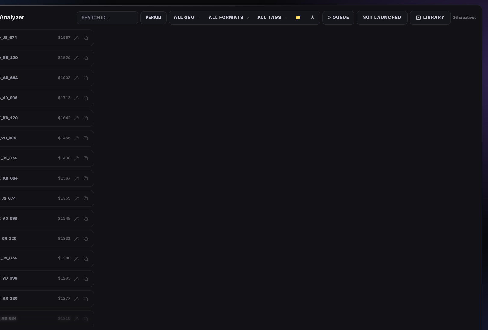
| Search ID | Пошук креативу за назвою/ID. |
| Період | Діапазон дат: сьогодні, вчора, цей місяць або свої дати. |
| Фільтри | Гео, формат (відео/статика), теги; 📁 — показати списком по тегах, як папки; ★ — тільки з мітками. |
| Queue | Черга на тест: креативи, які ти відклав запустити наступними. Кнопкою поруч усю чергу можна відправити в унікалізатор. |
| Not launched | Файли з Google Drive команди, які жодного разу не мали показу. |
| Library | Бібліотека креативів з Drive: клік — превʼю (відео грає). |
У картці креативу є вкладки модерації (що Facebook відхилив) і згадувань — де ти писав про цей креатив у нотатках. Мітки й позначки з часом видно в історії.
Нижня панель → Uniqueizer. Робить із одного креативу кілька різних варіантів прямо в браузері — файл нікуди не відправляється.
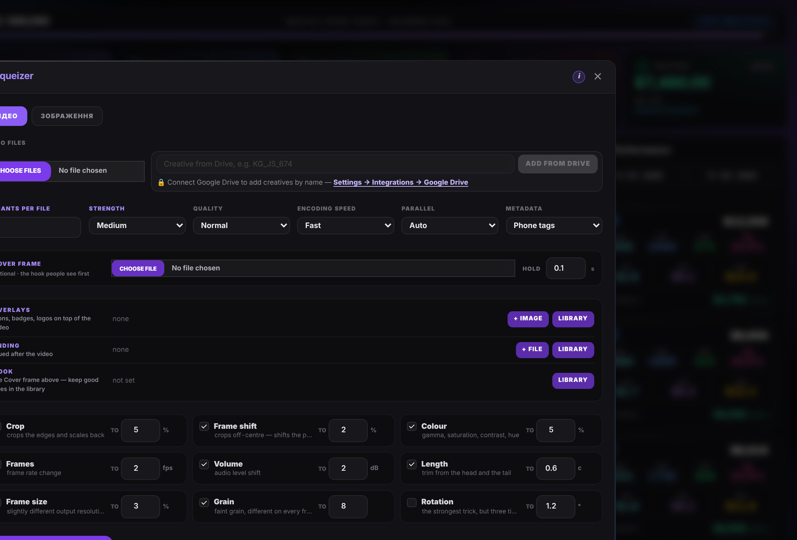
Heatmap · Report Builder · Domains · Expenses · Posts · Team
Ефективність за днями тижня: у які дні спенд дешевший, а R2D і профіт вищі. Червоне — гірше, зелене — краще.
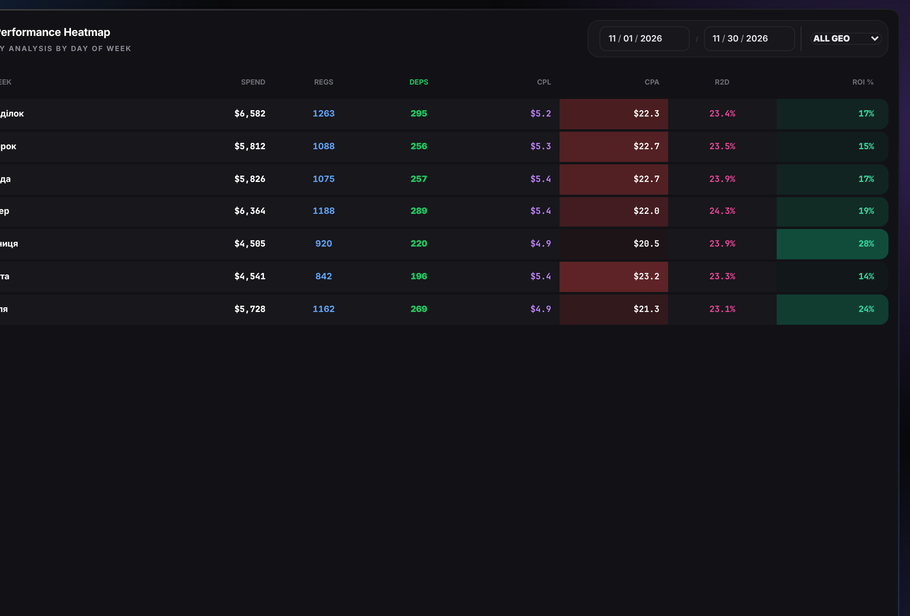
Конструктор звіту: групування (гео, кабінет, агент, офер, воронка, креатив, місяць…), фільтри, набір колонок. Збираєш потрібний розріз — і отримуєш таблицю з підсумком.
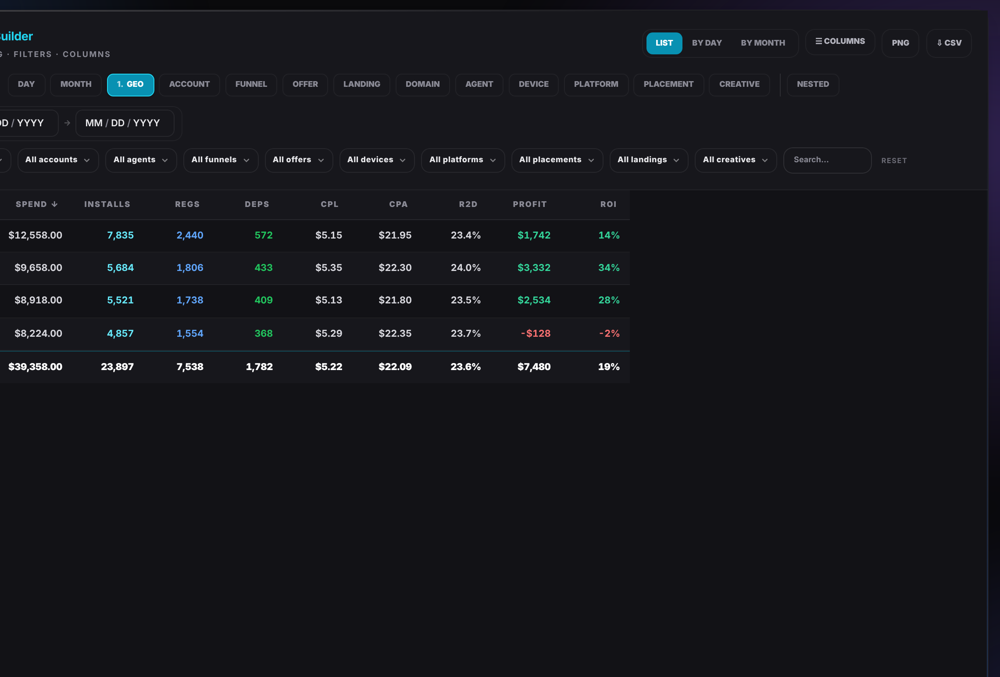
Домени PWA і чи вони відповідають. Список вставляється кнопкою Paste list, перевірка — Check. Браузер чесно бачить лише «відповідає / не відповідає»; точні коди перевіряє сервер.
Витрати поза спендом: акаунти, проксі, сервіси. Вони віднімаються від профіту на Dashboard. Додаєш праворуч: дата, сума, категорія, нотатка.
Публікація постів на сторінки: текст, посилання, картинка — зараз або за розкладом. Публікує сервер, токен сторінки в браузер не потрапляє.
Сторінка тімліда: кожен баєр окремо — хто що відкрутив і з яким результатом. Баєру вона потрібна рідко.
Довідники і питання словами
| Campaigns | Те саме, що Add data: завантаження звітів Facebook і Keitaro (розділ 3). |
| Records | Усі завантажені рядки: фільтр, правка, експорт CSV. |
| Sources | Довідники: кабінети (який кабінет якому агенту й профілю належить — Link cabinet), воронки, агенти, апки. Якщо Add data каже «кабінет без агента» — виправляється тут. |
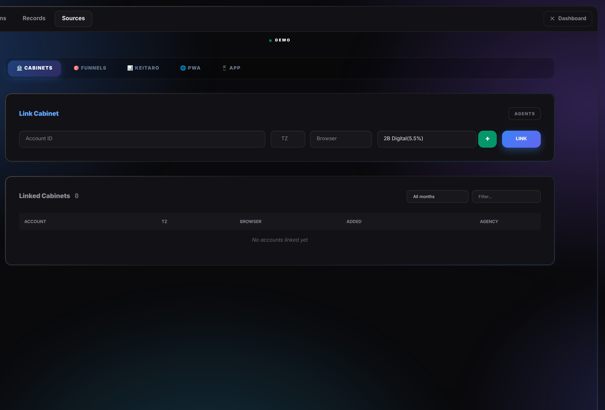
Питаєш словами — «спенд по гео за тиждень», «які креативи дали депи вчора». Модель не бачить твоїх цифр: вона лише складає план (що відфільтрувати й згрупувати), а рахує CRM у браузері. Тому відповідь — це твої реальні дані, а не здогадка.
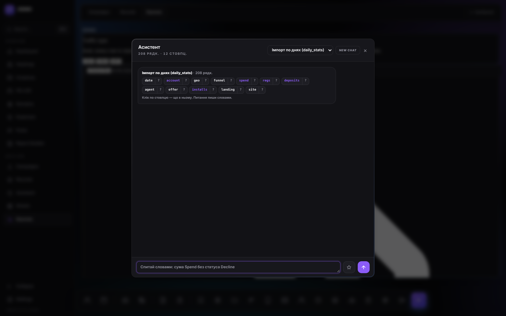
Google Таблиці й сторінки Notion команди, вбудовані прямо в CRM, — щоб не перемикатися між вкладками.
Інструменти, доступні з будь-якої сторінки
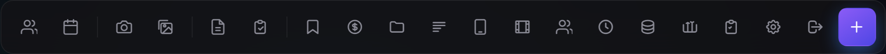
| Кнопка | Навіщо |
|---|---|
| Команда | Перемкнути команду, чиї дані показано. |
| Select Month | Місяць для Dashboard і звітів; там же Month close. |
| Performance Summary | Підсумки картинкою — скинути тімліду. |
| Gallery | Галерея звітних фото й скріншотів. |
| Daily Reports | Денні звіти. |
| Mission Center | Задачі: свої й від тімліда. |
| Quick Links | Твої закладки: трекер, BM, сервіси. |
| Bonus Calculator | Розрахунок бонусу; є чернетка з реального (бажано закритого) місяця. |
| Files | Файли команди в приватному сховищі (посилання живе 10 хвилин). |
| Texts | Банк текстів: гео → категорія → тексти, у кожного своя мова. |
| Apps | Апки (прілки) і PWA команди: пакет у магазині, стан, до якої воронки належать. |
| Uniqueizer | Унікалізатор креативів (розділ 7). |
| Accounts | Облік кабінетів зі своїми статусами (купівля, стан, нотатки) — окремо від FB LIVE, яка показує живий стан з Facebook. |
| Local time by geo | Котра зараз година в кожному гео. |
| DB Logs | Журнал змін у базі: хто і що змінив. |
| Geo Compare | Порівняння гео між командами. |
| Data Check | Звірка цифр CRM із Keitaro. |
| Settings / Log out | Налаштування (розділ 11) і вихід. |
| + (Add data) | Завантажити статистику (розділ 3). |
Settings: General · Layout · Payouts · Team access · Integrations
| General | План спенду на місяць (Monthly spend target), вигляд графіка. |
| Layout | Які блоки показувати і в якому порядку. |
| Payouts | Ставки оферів по гео: сума, модель (CPA або % від спенду), увімкнено чи ні. Від цього рахується дохід і профіт — нова ставка чи новий офер мають з'явитися тут. |
| Team access | Посилання й пароль для тімліда та які блоки йому видно. |
| Integrations | Facebook (токени), Telegram, Google Drive (папка з креативами) та інше. |
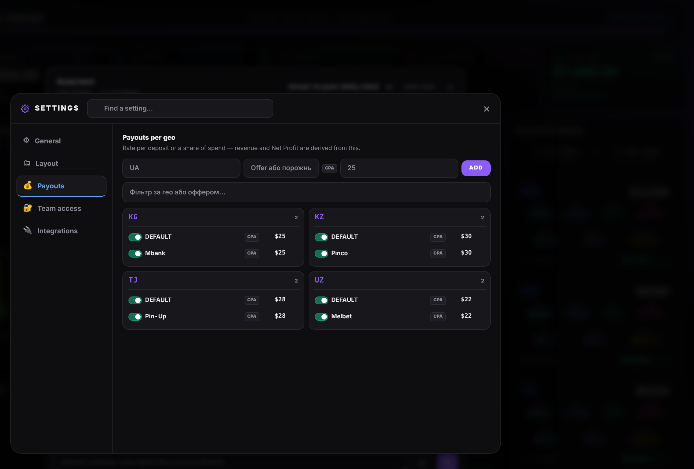
Що приходить: бан кабінета, тиша (кабінет перестав крутити), немає спенду, підсумок дня, а також нові коментарі з назвою сторінки. Які саме події надсилати — обирається там же.
Що робити, коли щось не так
| Що бачиш | Що робити |
|---|---|
| Кабінета немає у FB LIVE | Токен його не бачить. Перевір, що системний користувач BM має доступ до кабінета, тоді Sync. |
| «No page list» у кабінеті | Токен не дотягується до сторінки. Сторінку треба пошарити системному користувачу / застосунку в BM, потім Sync. |
| Запуск на апку: помилка прав на app events | Апка не пошарена кабінету. У налаштуваннях застосунку додай рекламні кабінети (Advertising accounts), або пошар апку через BM. |
| Не змінюється бюджет або ліміт | Прочитай текст помилки — це відповідь Facebook. CRM сама зміну не блокує. |
| На Dashboard порожньо за сьогодні | Нормально: Dashboard рахує з Add data. Живі цифри — у FB LIVE і Stat. Day. |
| Профіт нульовий або дивний | Немає ставки для цього гео/офера в Settings → Payouts, або офер вимкнений. |
| Add data: «невпізнані рядки» | Назва кампанії не за шаблоном. Виправ назву або вибери PWA/APP вручну. |
| Add data: «кабінет без агента» | Прив'яжи кабінет у Data hub → Sources. |
| Правило нічого не вимикає / вимикає все | Перевір поріг спенду й метрику (особливо Link CTR — див. розділ 6) і журнал правила. |
| Сайт поводиться дивно після оновлення | Онови сторінку (Ctrl+F5). Номер збірки — внизу меню. |
act_…). Так проблему знайдуть удесятеро швидше.Слова, які ти будеш чути щодня
| Кабінет | Рекламний акаунт Facebook (act_…). |
| BM | Business Manager — контейнер, у якому живуть кабінети, сторінки, пікселі й апки. |
| Токен | Ключ системного користувача BM, через який CRM читає кабінети й керує ними. |
| Агент | Постачальник кабінетів / профілів. |
| Профіль (браузер) | Номер антидетект-профілю, з якого працює кабінет (на скріншотах — 4175). |
| Фанка, Сторінка | Facebook-сторінка, від імені якої крутиться оголошення. |
| Гео | Країна трафіку (KG, KZ, UZ, TJ…). |
| Офер | Продукт рекламодавця, за який платять (Mbank, Pinco…). |
| Воронка, PWA / APP | Куди веде трафік: веб-застосунок (PWA) чи апка з магазину (APP). |
| Keitaro | Трекер: звідти інстали, реєстрації й депозити. |
| Інстал, Рега, Деп | Встановлення, реєстрація, депозит. |
| CPI · CPL · CPA | Ціна інстала · ліда · депозиту (спенд ÷ кількість). |
| R2D | Конверсія реєстрації в депозит. |
| ROI | Профіт ÷ спенд. |
| Ліміт (spend cap) | Скільки кабінет може витратити, поки ліміт не піднімуть. |
| Sync | Оновлення даних з Facebook. |
| Тиша | Кабінет живий, але перестав крутити — сповіщення в Telegram. |